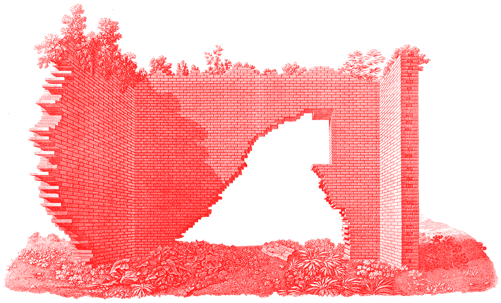

Jamie Holin Seoul, Korea Packages 2010 — 2021
“부모님이 사놓은 실용적인 조명과 내가 좋아하는 예쁜 조명은 본질적으로 다를까?
예쁜 조명은 단순히 시각적인 만족을 위한 걸까? 이건 시각적 만족은 허영심과 다를까?
예쁜 물건을 쓰면 기분이 좋아지고 전체 분위기가 달라지는 건 정상인가?”
“디자인은 왜 필요할까? 나는 모양이 예쁜 컵을 좋아하는데, 외관상 아름다운 게 디자인일까? 디자인은 그 이상의 것이 아닐까?”
“왜 이마트 생수는 안 예쁘고 에비앙 생수는 예쁠까?”
“현대카드는 왜 생수 하나를 만드는데 1년을 쓸까?”
“예쁜 포장지를 다 모아두는데 단순히 포장지를 만드는 것 이상의 무엇을 할 수 있을까?”
“타이포그래피는 재미있지만 현실과 동떨어진 영역은 아닐까? 타이포그래피는 어떻게 사람들의 삶을 도울 수 있을까?”
and i bought this postcard.
and we just knew that it was kim t’s birthday so we bought a chees cake for him.
and he seems to like it, doesn’t he?
back to class, we kept doing our work to finish printing our sentences, which was never easy.
if you roll it like this, then the types get printed on the paper.
while we were doing our work, our principle who is called ‘wing’ came to visit.
and we werealmost done. someone got exhausted. and someone was memorizing all the menu of a bakery to do a part time job.
and we werealmost done. someone got exhausted. and someone was memorizing all the menu of a bakery to do a part time job.
and we were almost done. someone got exhausted. and someone was memorizing all the menu of a bakery to do a part time job.
this is a screenshot of kim t’s instagram story because i really envied those books.
that night, i had a garlic bread from angel-in-us which was way too firm i gave up biting.
it was about my 2 classes at school, and i’m sorry to keep you guys waiting so long.
thank you for waiting for my shcool vlog. i’ll try to keep uploading more videos. bye.
Jamie Holin Seoul, Korea Packages 2010 — 2021
176 — This week on Cargo
CN_176
FEB 02, 2021

Our attraction was always toward negentropic works of abstraction, pieces that though experiential, were ultimately one sided propositions, to be completed personally (non-socially). Subsequently, we looked at art by the likes of Dan Graham and Lawrence Weiner admiringly, but at a distance — we felt something like a civic entanglement promoted in their work, and though it was clearly of a positive sort, our trauma of the aforementioned disingenuous social contract, kept us from engaging. That is until encountering the work of Liam Gillick.
There are infinite ways to connect subjects and matter; and of course no taxonomic system is correct, though some are useful. Grouping is always a failure by way of reduction (of the self-servingly over-permissive sort). We mention this as we want to be forgiven in our brief attempt at contextualizing the artist , whose work and simple/sharp site are our subject.
In our youth the arrival of what might be called minimal abstraction created a paradigm shift in our understanding of art and the world at large (truly). With the event of Donald Judd, Agnes Martin, Anne Truitt, Robert Ryman, et al, came the freedom of no longer having to suffer alone the vain, endless, mawkish subjectivity posing as compassionate objectivity of the people around us. This minimal abstraction was theory and supposition getting down to empirical business, eschewing lame but profitable broadness for poetic albeit rigid phenomenological exploration. It remains a continually sharpening filter through which most of our perception and subsequent conceptions pass
Jamie Hladky Canberra, Australia Photographs 2010 — 2018

-making that both a “photograph” and a “human” would literally be nothing without them. No parameter no thing.
메세지는 단단하게 방법은 유연하게 할 것.
환경과 윤리 주제에 대해서는 고도화된 컨텐츠를 접해야 한다.
선진국에서는 환경에 대해 30년 넘게 이슈화되었다.
좀 더 진지하고 깊숙한 토론을 많이 접해볼 필요가 있다.
왜 오랫동안 고민했는데도 해결이 안 됐나 고민하고 접근해야 한다.
I am making awesome posters these days and i showed them to nalgae, stefan segmeister and bundi. And also ready for an exchange student portfolio.
I really love the life here.
and i looked for some design books at kyobo bookstore
that night, mom and my little sister went to a grocery shopping at e-mart. and i wanted to get this the next day we had a type printing class at a type work space called book press.
you just literally find a exact type from here and then put them together.
they’re making their printing with machines.
it took like hours to find our types that match to our sentences.
we had lunch sitting outside.
and the sky was gorgeous.
after lunch, we had time to look around the cafe next to the workspace.
and i bought this postcard.
and we just knew that it was kim t’s birthday so we bought a chees cake for him.
and he seems to like it, doesn’t he?
back to class, we kept doing our work to finish printing our sentences, which was never easy.
if you roll it like this, then the types get printed on the paper.
while we were doing our work, our principle who is called ‘wing’ came to visit.
and we werealmost done. someone got exhausted. and someone was memorizing all the menu of a bakery to do a part time job.
and we werealmost done. someone got exhausted. and someone was memorizing all the menu of a bakery to do a part time job.
and we were almost done. someone got exhausted. and someone was memorizing all the menu of a bakery to do a part time job.
this is a screenshot of kim t’s instagram story because i really envied those books.
that night, i had a garlic bread from angel-in-us which was way too firm i gave up biting.
it was about my 2 classes at school, and i’m sorry to keep you guys waiting so long.
thank you for waiting for my shcool vlog. i’ll try to keep uploading more videos. bye.
Jamie Holin Seoul, Korea Packages 2010 — 2021
이태와 유라와 경석과 햄의 대화.
무슨 일이 있어도, 생각으로 먹고 살 겁니다. 내가 지금까지 부렸던 고집만큼 고집을 부릴 겁니다. 생각으로 먹고 살 겁니다.
여러분도 생각으로 먹고 살 겁니까?
사람이 명품이면 그가 뭘 해도 의미를 부여한다.
생각이 뭐에요?
생각하는 것에 대해서 생각해봤다.
말을 잘하고 글을 잘 쓰고.
고유성. 너만 할 수 있는 생각.
실력으로 멋대로 할 수 있는 경지로 오른다. 글로 그러고 싶어요.
영화?
글이 최종 목표고, 영화는 의사 전달 도구에요.
로맨틱 홀리데이 인트로 장면이 완전 멋있어.
인간의 슬픔에 끌려.
Magdalena Haretche Costa’s photographs are taken in such hich is to tie the whole business together as a gorgeously rich interference pattern.
Magdalena Haretche Costa’s photographs are taken in such a way that everyday scenes her lens, as a gorgeously rich interference pattern.
Magdalena Haretche Costa’s photographs are taken in such a way that every
somewhere in the layering is what